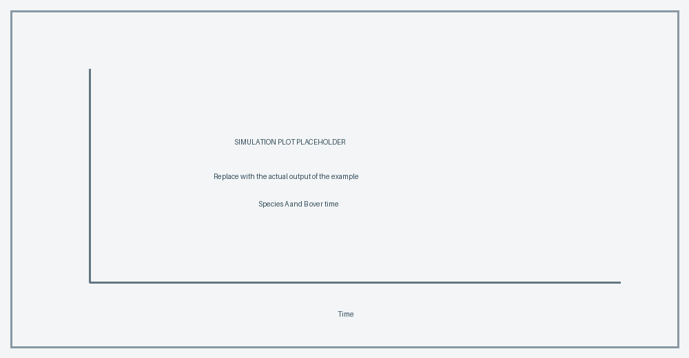

Evgeny Metelkin
2026-11-03
Models written in Heta can be brought into R for simulation and analysis. In this example, we will use DynMSR to load a small Heta project and build a model for simulation with mrgsolve.
DynMSR is available on CRAN and is part of the Heta project, a language and toolchain for building structured, reusable models. DynMSR uses Heta Compiler to convert the project before preparing the model for mrgsolve.
Create a directory for the model and save the following as index.heta inside it:
comp1 @Compartment .= 1;
A @Species { compartment: comp1 } .= 10;
B @Species { compartment: comp1 } .= 0;
r1 @Reaction { actors: A => 2B } := k1 * A * comp1;
k1 @Const = 1.2e-1;The model describes a reaction in which one unit of A produces two units of B. Its rate depends on A and the rate constant k1.
Install DynMSR and mrgsolve from CRAN:
install.packages("DynMSR")
install.packages("mrgsolve")Loading a Heta project also requires a compatible installation of Heta Compiler. See the DynMSR README for setup instructions and the supported compiler version.
Load the project, select its model, and build it for mrgsolve. Replace the path with the directory containing index.heta:
library(DynMSR)
library(mrgsolve)
platform <- heta_load("path/to/heta-quick-start")
model <- get_model(platform, 1)
mrgsolve_model <- build_mrgsolve(model)
result <- mrgsim(mrgsolve_model, end = 100, delta = 1)
plot(result)
Placeholder: replace with the actual simulation output for this example.
The simulation results can then be explored further with the tools available in R and mrgsolve. For more examples and package documentation, see DynMSR on GitHub.
License: CC-BY-4.0